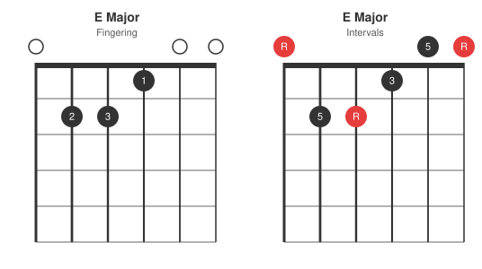
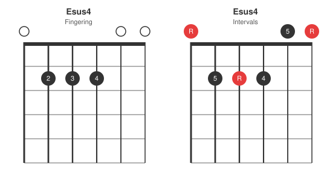
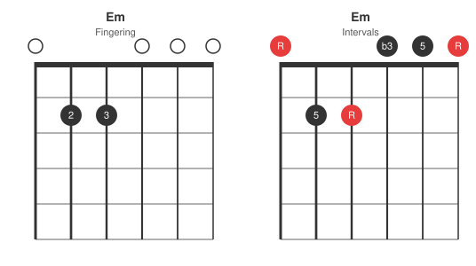
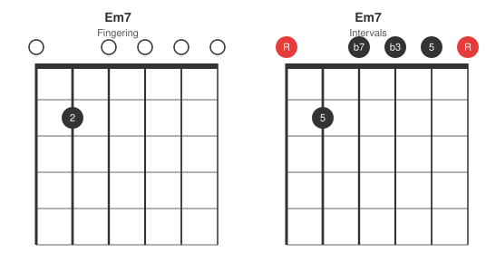
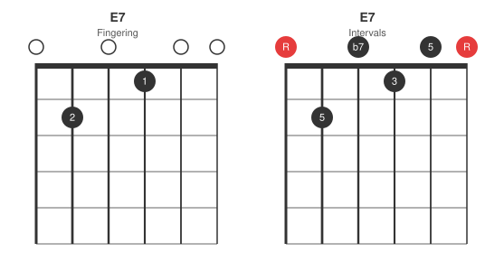
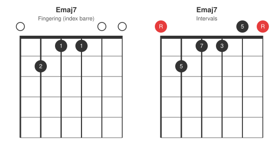
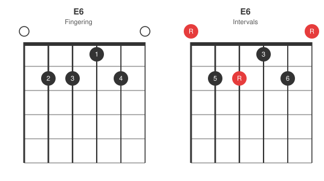
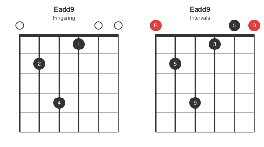

E major is the full six-string open shape, and the same shape barred at any fret becomes the movable "E-shape" chord used throughout the I-IV-V fretboard map. This post closes the open-chord series started with A and D. Each diagram shows the fingering on the left and the intervals that fingering spells on the right.
Base shape: E major
All six strings sound, so with only three distinct notes in the triad there is plenty of doubling. The G string carries the third, and the D string carries a doubled root. Those two strings take almost every variation below.

Suspended: sus4
The G string third moves up one fret to A, the fourth. An open Esus2 is not practical in standard tuning without muting or a stretch that defeats the point of an open chord, so sus4 is the one suspension that stays in the family of easy moves.

Minor and minor seventh
Em lifts the index finger and the open G string gives the minor third. Em7 then releases the doubled root on the D string as well, adding the flat seventh: one fretted note and five open strings, the simplest full chord shape on the guitar.


Dominant seventh and major seventh
E7 makes the same D string move against the major third: release the doubled root to the open D for the flat seventh. It is the I chord in a blues in E (see the 12-bar blues post). Emaj7 takes that string down only one fret instead, to D#, a half step below the root.


Sixth and add9
E6 is the one variation that leaves both the third and the doubled root alone. It adds the pinky on the B string at the second fret, so a fifth becomes C#, the sixth. Eadd9 goes back to the D string and stretches it up to the fourth fret, turning the doubled root into F#, the ninth.


Summary table
| Chord | Frets (low to high) | Change from E major |
|---|---|---|
| E | 022100 | base shape |
| Esus4 | 022200 | G string: 3rd -> 4th |
| Em | 022000 | G string: 3rd -> b3 (open) |
| Em7 | 020000 | Em, plus D string: doubled root -> b7 (open) |
| E7 | 020100 | D string: doubled root -> b7 (open) |
| Emaj7 | 021100 | D string: doubled root -> maj7 |
| E6 | 022120 | B string: 5th -> 6th |
| Eadd9 | 024100 | D string: doubled root -> 9th |
From open shape to movable barre
Barre the whole E major shape at any fret and the root moves with it while every relationship above stays intact. An F major barre at the first fret is the open E shape shifted up one. This is the shape behind the "E-shape root on the 6th string" reference in the I-IV-V fretboard map: learn the variations here and the same finger patterns are available anywhere on the neck once barred.